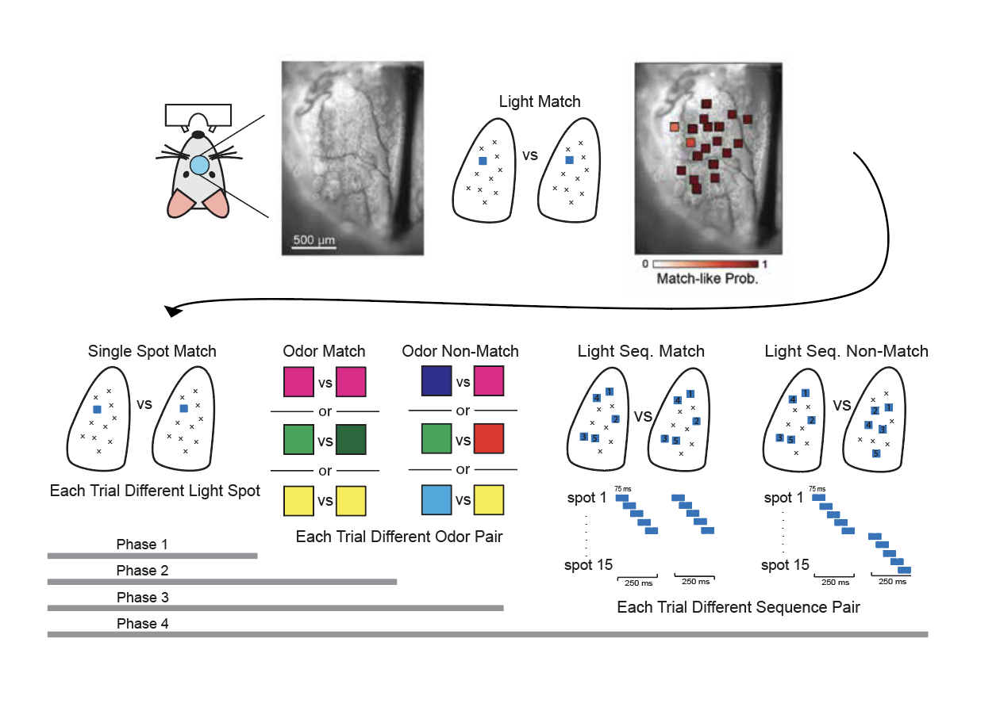

Experimental Setup
DMTS training procedure
Cranial Window Preparation and Optical Access
For each animal, a cranial window was implanted over the dorsal olfactory bulb to allow optical access to glomeruli. Panel A shows a representative cranial window in which individual g[...]
Phase 1: Light-Spot Training
Mice were initially trained using a single optogenetic light spot delivered sequentially with a 3-s interstimulus interval. Each light pulse had a duration of 10 ms. Training continued[...]
Across sessions, light-spot locations that elicited behavioral responses in >80% of trials were identified and used for subsequent training phases.
Phase 2: Introduction of Odor-Match Trials
After completing Phase 1, mice were introduced to odorant trials presented under match conditions. Light and odor trials were interleaved but never presented simultaneously. Animals rapidly learned to respond appropriately to both light and odor stimuli. Phase 2 was considered complete when mice achieved high accuracy on both light-match and odor-match trials.
Phase 3: Introduction of Odor Non-Match Trials
In Phase 3, odor non-match trials were introduced. Trial probabilities were set to 50% for light- or odor-match trials and 50% for odor non-match trials.
